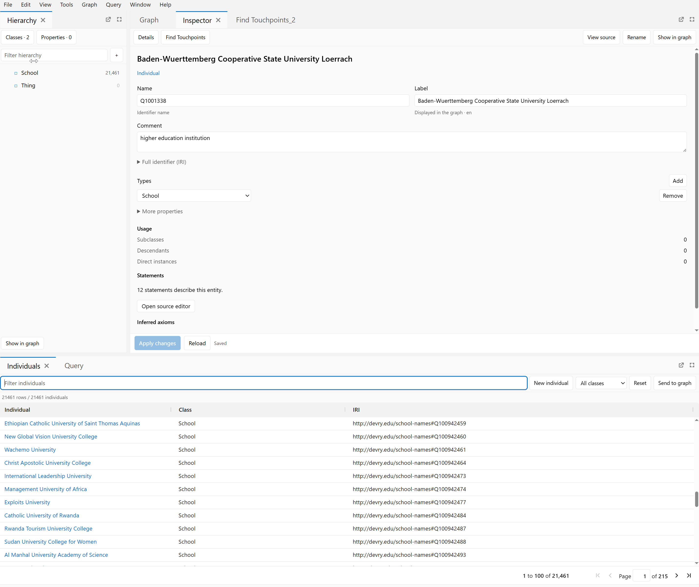
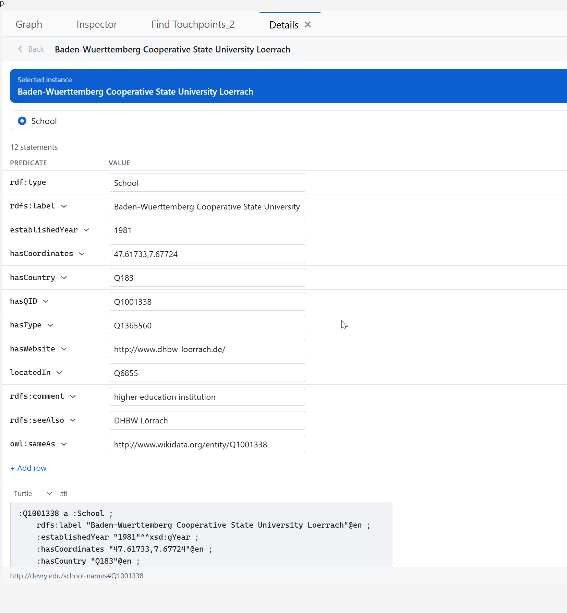

Visual reference for specs/individuals/README.md. A picture, not a specification: where this file and the README disagree, the README wins. Every exhibit names the requirements it renders. Frames with a resize grip in the corner re tier off their own rectangle, not off the window.

| What the capture shows | Why it is a defect | Forbidden by |
|---|---|---|
Three grid columns: Individual, Class, IRI | Class holds one distinct value across 21,461 rows and IRI is the namespace plus :hasQID. One informative column of three, with eleven predicates unreachable. | IND-36 |
| A tab strip, a toolbar and a count line before the column header | Three bands for controls that fit in one. | IND-26 |
21461 rows / 21461 individuals | The same number twice in four words. | IND-24 |
Usage: Subclasses 0, Descendants 0, Direct instances 0 | Three facts that are structurally zero for every individual and can never be anything else. | IND-86 |
More properties, collapsed | Nine of the subject's twelve statements are behind it. | IND-95 |
12 statements describe this entity with Open source editor | A count where the content belongs, and a trip to another surface to read it. | IND-94 |
Types with Add and Remove at the far edge | Controls roughly a thousand pixels from the field they operate on. | IND-91 |
Find Touchpoints inside the Inspector and Find Touchpoints_2 beside it | One feature twice, the second copy carrying a disambiguating counter. | IND-121 IND-124 |
Fill and distinct are measured over the whole of schools.ttl. Toggling a box here changes the live grid in exhibit C, and the reorder is the keyboard route of IND-60.
:hasType is filled on every one of 21,461 rows and carries 323 distinct values, so it is a real facet. rdf:type is filled on every row and carries one, so it sorts nothing and filters nothing. Fill alone cannot tell those two apart.unique per row needs both conditions. :hasWebsite has 16,117 distinct values over 16,286 filled rows: almost every value differs, yet a quarter of the ontology has no website. It is not an identifier, and IND-42 keeps the tag off it. :hasQID is filled on every row with every value different, and carries the tag.The algorithm run against the measured statistics of schools.ttl. Shaded rows are the four eligible columns it selects, beside the always present subject column.
| Column | Fill | Fill % | Distinct | Eligible | Why not | Rank | Default |
|---|
rdf:type a second distinct value and it becomes eligible with no user action and no code change. An implementation that cannot pass that test has hardcoded a list and failed IND-44.Drag any separator between two column headers. Double click a separator to fit the column to its widest value. Focus a separator and use the arrow keys, Enter to autofit, Home to restore. Click a header to sort and watch the blank rows stay at the bottom in both directions.
| Content | Treatment | Rendered |
|---|---|---|
| One value | The value, truncating at the column width | University of Colorado Boulder |
29 values of rdfs:seeAlso | First value and a control reporting the remainder. Never a delimiter, never a taller row. | CU Boulder |
No rdfs:label | Local name, marked as an identifier. 944 rows of this ontology. | Q10357800id |
| No value | Empty. Not a dash, a zero, an N/A or a word. | (this cell renders nothing) |
| A year | Aligned to the cell end, tabular figures | 1961 |
| Coordinates, IRIs, identifiers | Monospace, so a transposed character is visible | 40.00745,-105.26596 |
The same Inspector on two kinds. On the left, three usage facts are withdrawn because an individual cannot have them. On the right the same three are rendered, two of them as zero, because a class can.
| Predicate | Value |
|---|---|
rdf:type | |
rdfs:label | |
rdfs:seeAlso | |
rdf:typeinferred |
| Predicate | Value |
|---|---|
rdf:type | |
rdfs:label | |
rdfs:subClassOfinferred |
| Removed | Replaced by | Requirement |
|---|---|---|
| Usage: Subclasses 0, Descendants 0, Direct instances 0 | Usage facts the kind can actually have. The three return as real numbers on a class. | IND-86 |
| More properties | Nothing. Every asserted statement is in the table. | IND-95 |
| 12 statements describe this entity Open source editor | The statements, and a count line that also carries Add row. | IND-94 IND-99 |
| Types, with Add and Remove at the pane edge | Nothing. rdf:type is a predicate like any other and the statement table already adds and removes values of a predicate. | IND-91 IND-92 |
| Name, Label, Full identifier (IRI) as three bands | One identity line carrying kind, class, local name and IRI, each once. | IND-105 |
| Apply changes / Reload / Saved, standing permanently | One save state slot in the header. No draft, no actions. | IND-113 |

The feature docs/touchpoints.md describes: a Wikipedia search producing candidates, each reviewed for a relationship and a target before one batched apply. Not the sharing of predicate values.
owl:sameAs offered because the subject is an individual IND-140, and a disambiguation page that cannot be selected IND-136.Find Touchpoints_2 becomes impossible rather than merely discouraged. IND-124 IND-173owl:sameAs http://www.wikidata.org/entity/{QID}. Under IND-137 a candidate resolving to that item is already linked, so on schools.ttl the first row above is the normal result and the pane is close to a no operation. IND-152 requires the pane to say so rather than offer twenty rows that cannot be applied.Four frames at four sizes. Each one measures itself, not the window. Drag any corner across 600 wide or 400 tall and watch it change presentation; the published 16 pixel hysteresis means it changes back at 616 and 416.
Every tag and state side by side. Light and dark are authored as independent token blocks and are audited against their own backgrounds; neither is derived from the other. No tag here is carried by colour alone.
The full list is Appendix B.1 of the README. The two rows below are the ones that are decisions of this document rather than implementation gaps, and both are recorded in Appendix B.2 with the superseded sentence quoted.
| Superseded | By | Reason |
|---|---|---|
| Inspector submits through an Apply button in the fixed footer | IND-118 | The header already reports Saved. A footer Apply gives the pane two save status regions. |
| The Inspector's narrow presentation keeps secondary disclosures | IND-160 | The disclosure in the shipped build hides nine of twelve statements. Narrowing the predicate column saves the same space without hiding content. |